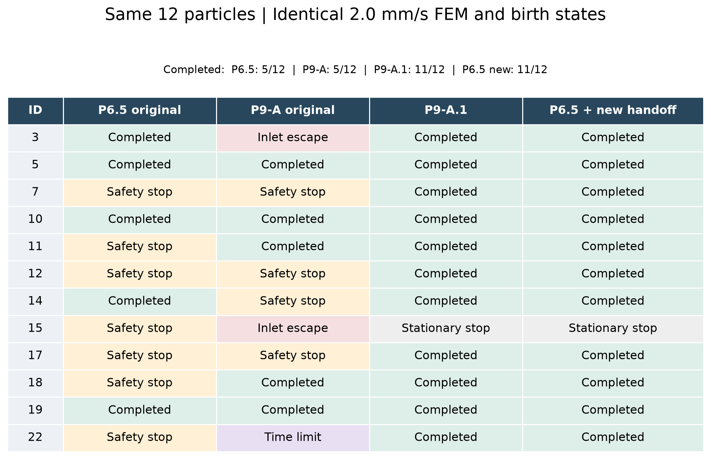
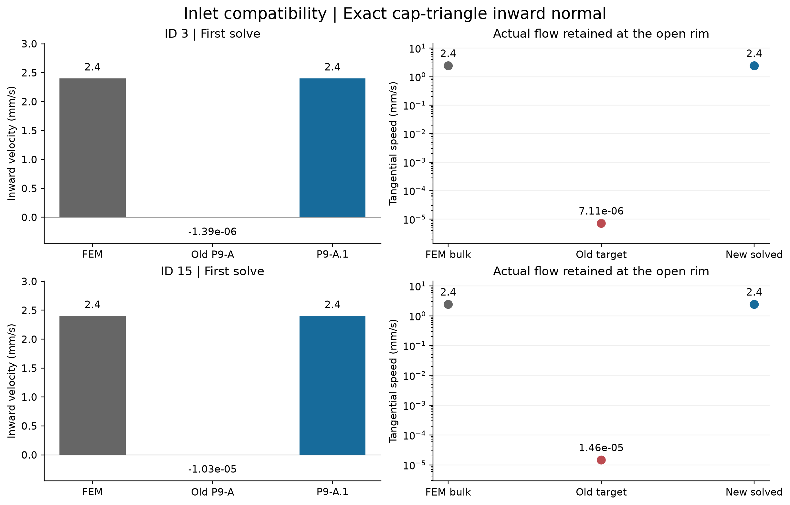
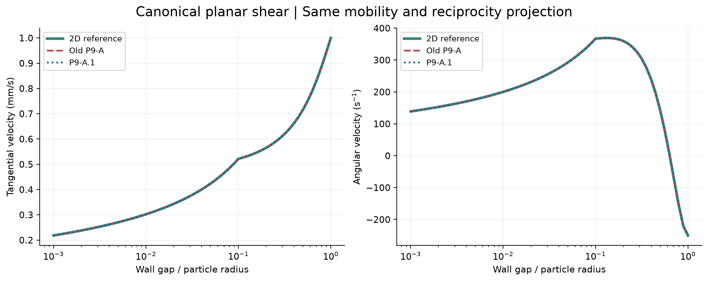
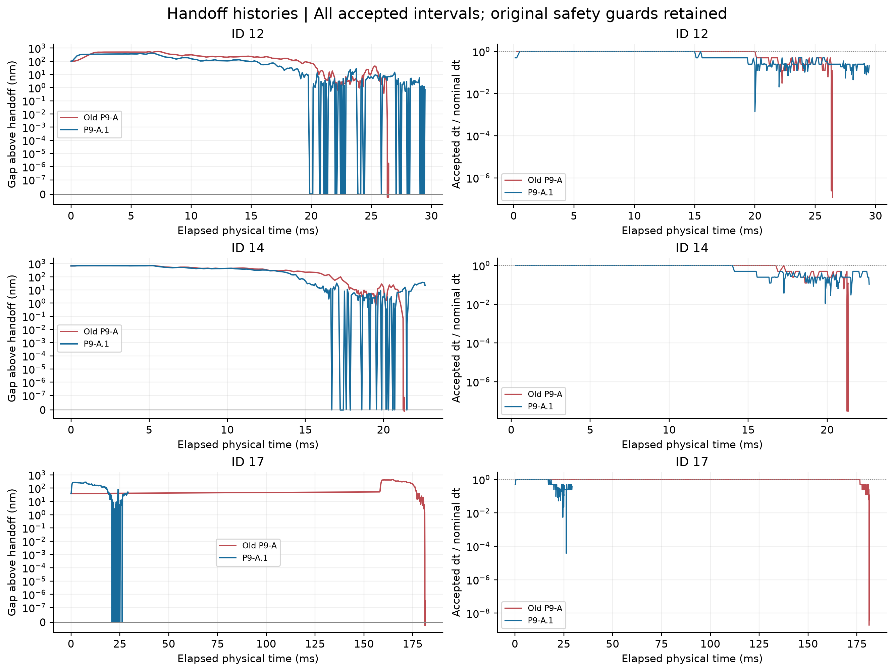
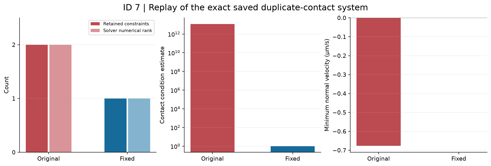
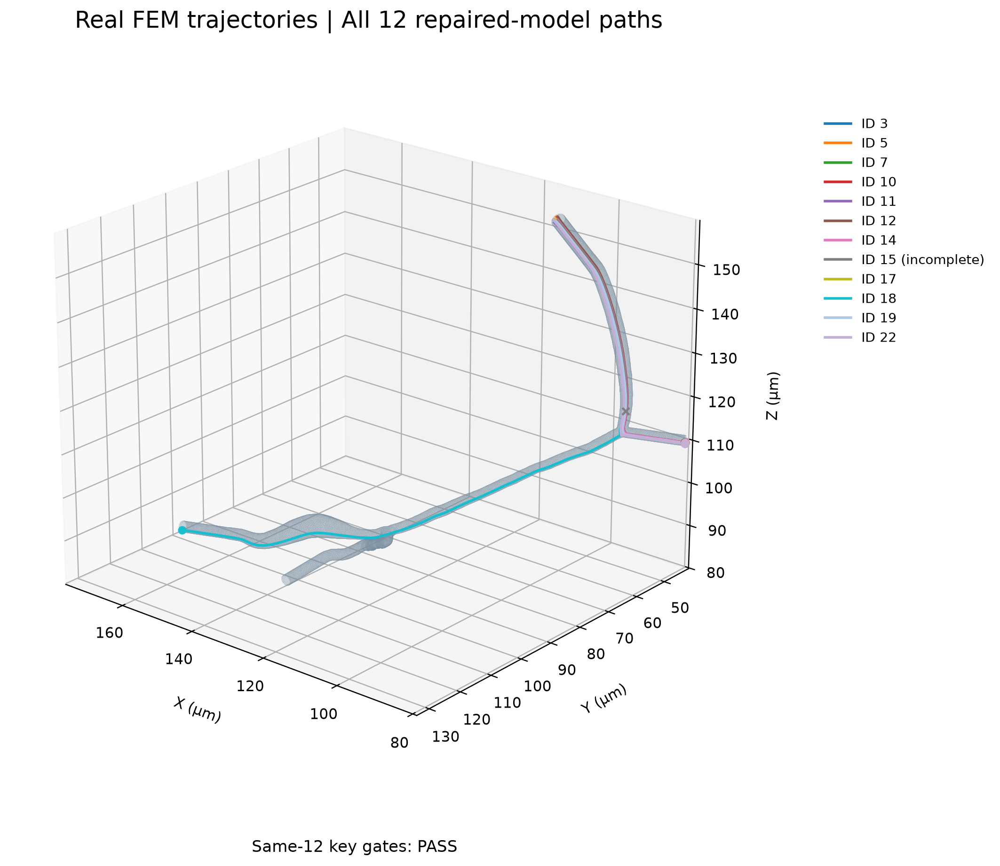

P9-A.1 production compatibility
P9A1_AUTOMATED_VALIDATION_PASS | PENDING_USER_REVIEW
Formal batch: EXECUTED
中文审核报告 · Machine gates
01_same12_before_after
PDF
02_inlet_3_15
PDF
03_canonical_planar
PDF
04_handoff_before_after
PDF
05_contact_redundancy_id7
PDF
06_real_same12_trajectories
PDF